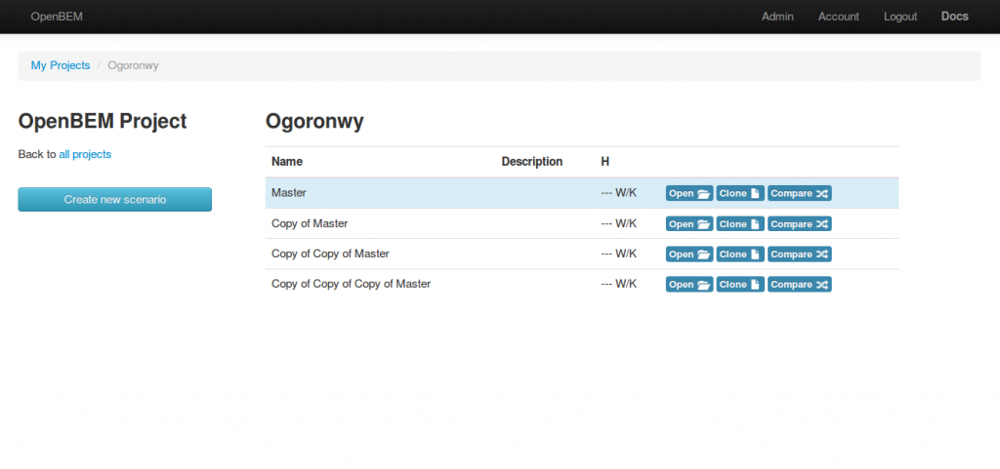
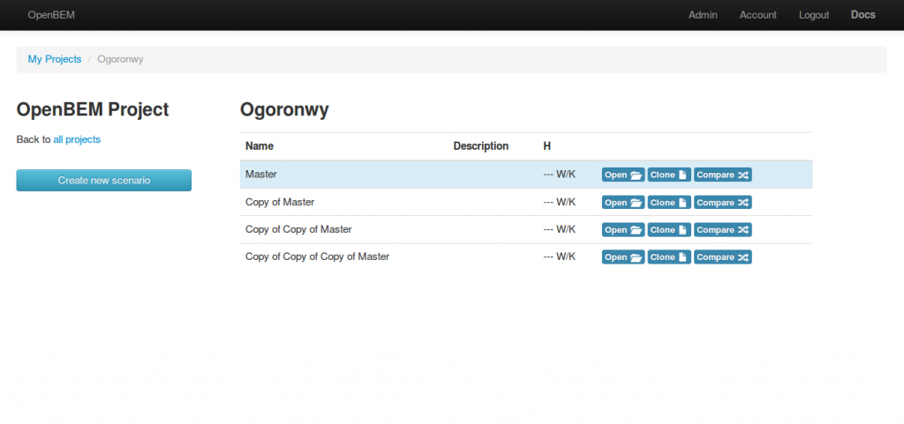

For those not familiar with what OpenBEM is here's a brief summary.
OpenBEM is a tool for doing whole house energy assessments, you start by inputting data about the construction: floor, wall, roof, window types, amount of insulation, u-values, heating system's, solar gains etc. The model then estimates how much heating energy is required to maintain a desired indoor temperature and the cost of that energy depending on the heating system and fuel type.
Once you have a baseline model of the building its then possible to explore scenario's, to see what the effect of doing different retrofit work to the building would be. You can use this tool to explore how to achieve an 80% energy reduction retrofit for example.
OpenBEM is based on the full 2012 edition of the SAP model by BRE.
Most of the work on the model was done Jan-Feb this year, the latest work is a start on adding the ability to create multiple building projects per user and then multiple scenario's per building project. Here are a few screenshots of the new features.
My projects interface: create and delete projects, in future it could be possible to share a project with another emoncms user in order to work collaboratively on it.
Clicking on Open (project) brings up the scenario list for the selected project, its possible to create any number of scenario's and clone either the master/baseline model or any of the other scenarios.

An example scenario of what would be quite an inefficient house (note: this isnt a real house just a quick example, I havent put in all the details such as the windows, water heating, lighting, cooking and appliances)
A much improved scenario:
Clicking on compare brings up a list of changes between the Master model and a selected scenario: (recording changes to the heating system is still to be done).
The idea is to make the compare tab much more visual with information on the savings made: energy, carbon, financial and the ability to tweek measures in the change interface.
Another part of the software that's yet to be developed is a reporting output that generates a report detailing the exisiting performance, changes that have been selected and resultant target performance.
OpenBEM Module Development
Submitted by TrystanLea on Thu, 17/04/2014 - 12:39I've been doing a bit more work on the OpenBEM (open source building energy model) emoncms module which is part of the OpenEnergyMonitor and CarbonCoop collaboration: http://openenergymonitor.blogspot.co.uk/2013/05/carbon-coop.html
For those not familiar with what OpenBEM is here's a brief summary.
OpenBEM is a tool for doing whole house energy assessments, you start by inputting data about the construction: floor, wall, roof, window types, amount of insulation, u-values, heating system's, solar gains etc. The model then estimates how much heating energy is required to maintain a desired indoor temperature and the cost of that energy depending on the heating system and fuel type.
Once you have a baseline model of the building its then possible to explore scenario's, to see what the effect of doing different retrofit work to the building would be. You can use this tool to explore how to achieve an 80% energy reduction retrofit for example.
OpenBEM is based on the full 2012 edition of the SAP model by BRE.
There some more documentation on it here: http://openenergymonitor.org/emon/openbem
Latest developments
Most of the work on the model was done Jan-Feb this year, the latest work is a start on adding the ability to create multiple building projects per user and then multiple scenario's per building project. Here are a few screenshots of the new features.
My projects interface: create and delete projects, in future it could be possible to share a project with another emoncms user in order to work collaboratively on it.
Clicking on Open (project) brings up the scenario list for the selected project, its possible to create any number of scenario's and clone either the master/baseline model or any of the other scenarios.

An example scenario of what would be quite an inefficient house (note: this isnt a real house just a quick example, I havent put in all the details such as the windows, water heating, lighting, cooking and appliances)
A much improved scenario:
Clicking on compare brings up a list of changes between the Master model and a selected scenario: (recording changes to the heating system is still to be done).
The idea is to make the compare tab much more visual with information on the savings made: energy, carbon, financial and the ability to tweek measures in the change interface.
Another part of the software that's yet to be developed is a reporting output that generates a report detailing the exisiting performance, changes that have been selected and resultant target performance.
The code for this is all up on github under the multiscenario branch of the openbem module here: https://github.com/emoncms/openbem/tree/multiscenario
For the wider context of where this sap/openbem assessment software development is going take a look at Charlie Baker's talk about carbon coop and 80% retrofit at the radical emissions reduction conference its an exciting project!